%%{init: {'flowchart': {'rankSpacing': 300, 'nodeSpacing': 30}}}%%
flowchart LR
%% Subgraph Styling
style INPUTS fill:#F8F9FA,stroke:#D3D3D3,stroke-width:2px
style PROCESSING fill:#F8F9FA,stroke:#D3D3D3,stroke-width:2px
style OUTPUTS fill:#F8F9FA,stroke:#D3D3D3,stroke-width:2px
%% Input Layer
subgraph INPUTS [" "]
direction TB
RawES["<span style='font-size: 38px;'><b>Global InVEST ES Models</b></span> <br/> <span style='font-size: 32px;'>300m Rasters <i>(1992 and 2020)</i></span>"]
RawGrid["<span style='font-size: 38px;'><b>IUCN AOO 10km Master Grid</b></span> <br/> <span style='font-size: 32px;'><i>Vector with Subregional Attributes</i></span>"]
RawLC["<span style='font-size: 38px;'><b>ESA CCI Land Cover</b></span> <br/> <span style='font-size: 32px;'>300m Rasters <i>(1992 and 2020)</i></span>"]
RawSoc["<span style='font-size: 38px;'><b>Socioeconomic Data</b></span> <br/> <span style='font-size: 32px;'>Rasters <i>(Pop, GDP, HDI)</i></span>"]
end
%% Processing Layer
subgraph PROCESSING [" "]
direction TB
IntA["<span style='font-size: 38px;'><b>Path A: Global Trajectories</b></span> <br/> <span style='font-size: 32px;'>Zonal Summaries <i>(1992 and 2020)</i></span>"]
MathA["<span style='font-size: 38px;'><b>Path A Metrics</b></span> <br/> <span style='font-size: 32px;'>SPC and Absolute Difference</span>"]
IntB["<span style='font-size: 38px;'><b>Path B: Grid Analysis</b></span> <br/> <span style='font-size: 32px;'>10km Zonal Summaries <i>(1992 and 2020)</i></span>"]
MathB["<span style='font-size: 38px;'><b>Path B Metrics</b></span> <br/> <span style='font-size: 32px;'>SPC and Absolute Difference</span>"]
MathLC["<span style='font-size: 38px;'><b>Land Cover Transitions</b></span> <br/> <span style='font-size: 32px;'>Reclassified LC Contingency <br/> Matrices per 10km Gridcell</span>"]
MathSoc["<span style='font-size: 38px;'><b>Socioeconomic Stats and KS Tests</b></span> <br/> <span style='font-size: 32px;'>10km Grid Aggregation <br/> and Statistical Profiling</span>"]
end
%% Outputs Layer
subgraph OUTPUTS [" "]
direction TB
P1["<span style='font-size: 38px;'><b>WHAT: Global Trajectories</b></span> <br/> <i style='font-size: 32px; font-weight: normal;'>Bar Charts, Summary Tables, <br/> and Cartographies (GPKGs)</i>"]
P2["<span style='font-size: 38px;'><b>WHERE: Hotspot Detection (Top/Bottom 5%)</b></span> <br/> <i style='font-size: 32px; font-weight: normal;'>Abs and SPC GPKGs, Synthesis Maps, <br/> and Distribution Plots</i>"]
P3["<span style='font-size: 38px;'><b>WHY: Attribution Gap</b></span> <br/> <i style='font-size: 32px; font-weight: normal;'>LCC Overlap CSVs, Heatmaps, <br/> Scatterplots, and Driver Maps</i>"]
P4["<span style='font-size: 38px;'><b>WHO: Equity and Exposure</b></span> <br/> <i style='font-size: 32px; font-weight: normal;'>KS Test Plots and <br/> Population Exposure CSVs</i>"]
end
%% Logical Connections
RawGrid ==> IntB
RawGrid ==> MathLC
RawGrid ==> MathSoc
RawES ==> IntA
RawES ==> IntB
IntA ==> MathA
IntB ==> MathB
MathA ==> P1
MathB ==> P2
%% Downstream Analysis from Hotspots (P2)
P2 ==> P3
RawLC ==> MathLC
MathLC ==> P3
P2 ==> P4
RawSoc ==> MathSoc
MathSoc ==> P4
%% Layout Guides
RawSoc ~~~ MathSoc
IntA ~~~ P1
%% CANONICAL COLOR CLASSES (Matching Circular Diagram)
classDef c_what fill:#007930,stroke:#004D1E,stroke-width:3px,color:#FFF;
classDef c_where fill:#7B8327,stroke:#515619,stroke-width:3px,color:#FFF;
classDef c_why fill:#F07D00,stroke:#A85700,stroke-width:3px,color:#FFF;
classDef c_who fill:#F5D200,stroke:#B39900,stroke-width:3px,color:#333;
%% Pillar Assignments
class RawES,IntA,MathA,P1 c_what;
class RawGrid,IntB,MathB,P2 c_where;
class RawLC,MathLC,P3 c_why;
class RawSoc,MathSoc,P4 c_who;
Global Ecosystem Service Time Series: A Spatiotemporal Analysis of Change, Exposure, and Attribution
Collaborative Draft for Advisor Feedback
1 Abstract
Ecosystem services—the ecological processes and structural configurations through which natural ecosystems sustain and fulfill human life—are declining globally, but their spatial concentration, affected populations, and underlying driving mechanisms remain poorly understood. We analyze overarching regional trajectories and localized changes for eight distinct biophysical service variables across 1.30 million 100 \(\text{km}^2\) equal-area grid cells worldwide between 1992 and 2020. Integrating the Integrated Valuation of Ecosystem Services and Tradeoffs (InVEST) modeling framework, European Space Agency Climate Change Initiative (ESA CCI) land cover records, and gridded socioeconomic covariates, we identify 252,215 unique grid cells experiencing at least one extreme ecosystem service decline hotspot (defined as the extreme 5% of relative change values calculated via Symmetric Percentage Change per service).
Our spatial analysis reveals three primary systemic trends: (1) marked geographic clustering of multi-service hotspots predominantly within Latin America and the East Asia-Pacific regions; (2) a profound “multiplier effect” in human exposure, where highly localized declines cascade to affect over 7.6 billion connected beneficiaries (96.7% of the evaluated global population) via downstream and travel-access dependencies, with lower-middle-income nations experiencing 1.6 times higher localized intensity than high-income countries; and (3) a massive spatial attribution gap wherein approximately 76% of identified hotspots exhibit zero intersection with macro-scale land cover conversion. This attribution complexity strongly implies that sub-pixel, in-situ ecosystem degradation vastly outpaces outright land conversion as a primary driver of global nature futures decline. These findings highlight an urgent need for targeted, context-specific conservation and landscape management strategies that explicitly account for spatial concentration, compounding downstream demographic exposure, and non-conversion degradation pathways.
Keywords: Ecosystem services, Spatial hotspots, Land-use change, Socioeconomic profiling, Nature futures, Global assessment
2 Introduction
2.1 Ecosystem Services at Risk
Ecosystem services represent the structural components, biophysical functions, and ecological processes through which natural landscapes generate direct and indirect benefits for human societies (Daily et al., 2009). Despite their foundational role in supporting global economic stability, food security, and climate resilience, critical landscape functions—including wild pollination, hydrological regulation, and coastal risk mitigation—are undergoing unprecedented systemic declines worldwide (Millennium Ecosystem Assessment, 2005; IPBES, 2019). Current estimates indicate that upwards of 1.1 billion vulnerable individuals rely directly on local ecosystem configurations for their immediate subsistence and natural resource-based livelihoods (Chaplin-Kramer et al., 2019; Fedele et al., 2021). However, the highly localized geographic configurations of these changes, alongside the precise demographic identities of vulnerable populations, remain starkly under-characterized at the global scale.
2.2 Spatial Prioritization Challenge
Developing effective mitigation frameworks is fundamentally constrained by a compounding set of resource, institutional, and informational bottlenecks (Daily et al., 2009; Chaplin-Kramer et al., 2019). Conservation investments and climate adaptation funds are inherently finite and must be optimally allocated; however, the challenge extends beyond financial scarcity. Decision-makers lack access to spatially explicit, globally consistent, and computationally reproducible metrics capable of diagnosing where ecosystem service capacity is declining most acutely (WHERE), which specific segments of human society are most vulnerable (WHO), and what precise biophysical or anthropogenic mechanisms drive observed losses (WHY).
This diagnostic gap can result in misallocated resource flows, as broad national or continental aggregations can mask local vulnerabilities and exacerbate systemic environmental injustices (Bullard, 1990). Without a standardized, high-resolution baseline tracking changes through time, implementing effective landscape-level interventions remains challenging. A reproducible global assessment that structurally links biophysical service models with satellite observations and fine-scale demographic grids is required to shift landscape management, conservation finance, and international policy from reactive remediation to targeted spatial prioritization. Crucially, this highly localized approach directly supports the derivation of Gross Ecosystem Product (GEP) metrics within the Natural Capital Project framework and provides actionable spatial intelligence for international biodiversity platforms such as IPBES.
2.3 Research Objectives
This study addresses four structurally linked research questions:
- What are the overarching global and macro-regional trajectories of absolute and relative ecosystem service change?
- Where are the localized hotspots of extreme ecosystem service decline geographically concentrated?
- Who is directly exposed to these localized declines, and how does human vulnerability scale when transitioning from local in-situ populations to connected downstream serviceshed beneficiaries?
- What proportion of localized ecosystem service decline can be explicitly attributed to satellite-detected land cover conversion, and to what extent does the remaining variance suggest the influence of sub-pixel, in-situ habitat degradation?
3 Methods
3.1 Data Sources and Study Design
To evaluate global ecosystem dynamics, we established a 28-year temporal scope spanning between 1992 and 2020. This specific window was selected to leverage the maximum continuous historical baseline provided by the European Space Agency Climate Change Initiative (ESA CCI) land cover time series (ESA, 2017), allowing us to capture long-term landscape trajectories preceding and following the transition into the Sustainable Development Goal (SDG) era. The spatial scope encompasses all terrestrial landmasses, initially partitioned into a standardized equal-area master grid of 1,522,073 cells (\(100\text{ km}^2\) each), utilizing the IUCN Area of Occupancy (Murray, 2017) structural backbone grid. During the spatial data extraction pipeline, grid cells that lacked complete underlying raster data coverage (e.g., due to raster extents not fully covering coastal margins, small islands, or specific regions across all 1992 and 2020 baseline variables) were systematically dropped when calculating temporal changes. This exclusion ensured that our analysis only compared cells with consistent, non-NA biophysical data across both time periods, resulting in a final evaluated sample of 1,302,099 viable cells out of the original 1.52 million.
3.1.1 Biophysical Modeling of Ecosystem Services
We used eight simulated continuous ecosystem service variables modeled at a native 300-meter spatial resolution using the InVEST (Integrated Valuation of Ecosystem Services and Tradeoffs) biophysical software suite (Sharp et al., 2020). To ensure comparisons of volumetric ecosystem services (those expressed in absolute physical units such as kilograms of nutrient or tons of sediment) remain physically meaningful across latitudes, we standardized all extensive variables to a per-hectare basis prior to grid aggregation. Intensive variables (e.g., risk and retention ratios) were retained in their native dimensionless index units. Additionally, coastal risk indices were calculated natively in the vector domain before rasterization to prevent floating-point interpolation errors along complex shorelines. The modeled suite targets three core thematic areas of human-nature interdependence:
- Local & Habitat Services: Nature access (modeled as a spatial proxy of human proximity to intact natural habitat matrices) and pollination (evaluated as landscape-level habitat suitability and foraging range support for wild pollinator guilds).
- Coastal Risk Mitigation: Coastal protection (simulated as absolute open-ocean wave energy attenuation by marine and coastal vegetative barriers) and the coastal risk reduction ratio (the proportional reduction in socio-ecological vulnerability directly mitigated by the presence of protective coastal habitats).
- Hydrological Regulation: Nitrogen export (total annual nutrient loading delivered to surface waterways), nitrogen retention ratio (the relative landscape efficiency in trapping and filtering overland nutrient flows), sediment export (total annual sediment yield reaching stream networks), and the sediment retention ratio (the structural capacity of the landscape matrix to intercept and retain upslope soil erosion). Ratios were included to normalize for varying baseline precipitation and topographical loads, allowing for a standardized assessment of the landscape’s internal regulatory capacity independent of external climatic forcing.
3.1.2 Ancillary Datasets and Harmonization
To cross-examine biophysical changes with external socioeconomic and land-use drivers, we compiled and harmonized a suite of global gridded covariates to the 10-km IUCN grid template. Population exposure was extracted from the Global Human Settlement Layer (GHSL-POP), localized urban footprints from GHSL-BUILT, gross domestic product from the World Bank gridded economic layers, human development metrics from the United Nations Development Programme (UNDP-HDI), and agricultural landscape metrics from Mehrabi et al. (2022).
The 300-meter ESA CCI land cover dataset serves a dual role within this pipeline; as a primary input driving the underlying InVEST biophysical models and as the baseline for the downstream spatial attribution analysis. To systematically isolate land-use trajectories across the 28-year window, land cover transitions were cross-tabulated into square contingency matrices tracking change metrics gross loss, gross gain, and exchange (Pontius, 2022; Pontius & Santacruz, 2014). National boundaries, sub-national administrative units, and cross-cutting global biomes were subsequently integrated via an expert-reviewed correspondence table (ee_correspondence). Because the biophysical simulations natively rely on these categorical land cover classes to assign static loading and retention coefficients, the attribution step is structurally linked to the initial modeling inputs. This shared baseline functions as an intentional, constraint on the attribution pipeline, and establishing an expected outcome in which service changes should strongly align with the mapped land-use transitions.
3.2 Analysis Pipeline
3.2.1 Regional Trajectories versus Grid-Level Hotspots
The analytical workflow implements a dual-pathway structure designed to assess distinct scales of landscape modification. To evaluate broad, systemic macro-regional trajectories (the “WHAT”), we computed pixel-by-pixel modifications across the native 300-meter modeled rasters, aggregating the differences to different geographic groupings (global biomes, World Bank income classes and regions as well as individual countries ), extracting large-scale trends across major earth systems.
To isolate localized intensities of severe environmental decline (the “WHERE”), baseline (1992) and future (2020) biophysical rasters were spatially aggregated via zonal statistics to the 10-km equal-area grid prior to executing per-cell change calculations. This dual framework ensures that extreme localized declines are not erased or muted by broad regional averaging.
```
3.2.2 Zonal Summaries and Symmetric Percentage Change (SPC)
Per-cell absolute changes within the 10-km grid were computed as:
\[\Delta S = S_{2020} - S_{1992}\]
To calculate relative changes through time without introducing severe scale errors or mathematical inflation near zero-baselines, we utilized Symmetric Percentage Change (SPC):
\[SPC = \frac{S_{2020} - S_{1992}}{(|S_{2020}| + |S_{1992}|) / 2} \times 100\]
SPC treats gains and losses symmetrically and bounds all resulting outputs strictly between \(-200\%\) and \(+200\%\). This mathematical bound effectively dampens the artificial distortions and division-by-zero errors that standard relative change equations generate when baseline landscape capacities (\(S_{1992}\)) approach zero (Berry & Ayers, 2006).
3.2.3 Hotspot Identification
Ecosystem service change hotspots are defined as grid cells falling within the extreme 5th percentile of relative change (SPC) values per service type over the 28-year period. Directionality was customized to match environmental degradation across distinct service architectures: for services where an increase denotes landscape damage (e.g., Nitrogen Export, Sediment Export), the upper 5% of the SPC distribution was extracted; for services where a decrease signifies loss of function (e.g., Pollination, Nature Access, Retention Ratios), the lower 5% was utilized. Utilizing percentiles rather than rigid, arbitrary absolute thresholds guarantees complete comparability across disparate biophysical variables measured in fundamentally different units (e.g., kilograms of exported nutrient versus dimensionless protection ratios), ensuring that hotspots represent the most extreme local deviations regardless of the underlying metric scale (Berry & Ayers, 2006).
3.2.4 Socioeconomic Profiling and Spatial Statistics
To statistically isolate the human dimensions of these hotspots, we compared the underlying distributions of socioeconomic covariates inside hotspot cells against a balanced background landscape utilizing two-sample Kolmogorov-Smirnov (KS) tests:
\[D = \max_x |F_{\text{hotspot}}(x) - F_{\text{non-hotspot}}(x)|\]
Given the very large sample size of our global grid (\(n \approx 1.5\text{ million}\) cells), which artificially inflates standard \(p\)-values and overstates trivial statistical differences (Lin et al., 2013), we utilized Cliff’s Delta (\(\delta\)) non-parametric effect-size metrics to evaluate the true practical magnitude and direction of the socioeconomic distributions (Cliff, 1993). To mitigate sample size imbalances and interference from regions experiencing extreme opposite trajectories (i.e., substantial service gains), hotspots were compared strictly against a matched counterfactual background representing the “business-as-usual” median landscape (the 47.5th to 52.5th percentiles of continuous change), adapting geographic control selection frameworks designed for large spatial observations (Andam et al., 2008). All \(p\)-values were subsequently adjusted using a Benjamini-Hochberg False Discovery Rate (FDR) correction to strictly control Type I error propagation across multiple simultaneous testing dimensions (Benjamini & Hochberg, 1995).
3.2.5 Spatial Attribution Analysis
To isolate the operational drivers of decline, we executed a spatial overlay analysis between the finalized hotspot grids and areas of land cover conversion. Through specific land cover transitions, we explored distinct direct drivers such as forest loss, agricultural expansion, and grassland loss. We calculated the attribution gap as the total proportion of biophysical ecosystem service hotspots that exhibited zero spatial overlap with any major land-use transition at the 300-meter scale. A high attribution gap serves as a strong, spatially explicit proxy suggesting that sub-pixel, in-situ habitat degradation (e.g., understory thinning, selective canopy removal, chemical intensification) represents the dominant mechanism driving loss of service, bypassing traditional satellite land-use detection.
4 Results
4.1 Global and Regional Trajectories
The aggregated regional analysis shows a decoupling between absolute volumetric changes and relative functional shifts. Continental summaries show large absolute volume losses concentrated within expansive, high-baseline tropical forest biomes, representing a systemic drawdown of global ecological capital. Concurrently, evaluating percentage changes across intermediate or arid biomes reveals widespread, low-magnitude landscape transitions that point to a generalized destabilization of global landscape regulation functions over the 28-year window.
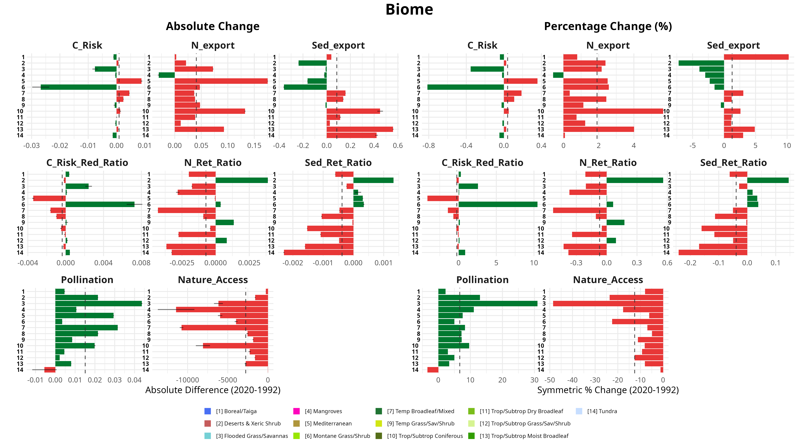
4.1.1 Geographic Distribution by Biome
The maps below illustrate the spatial distribution of these trajectories across global biomes, highlighting relative shifts in ecosystem service provision alongside absolute volumetric change.
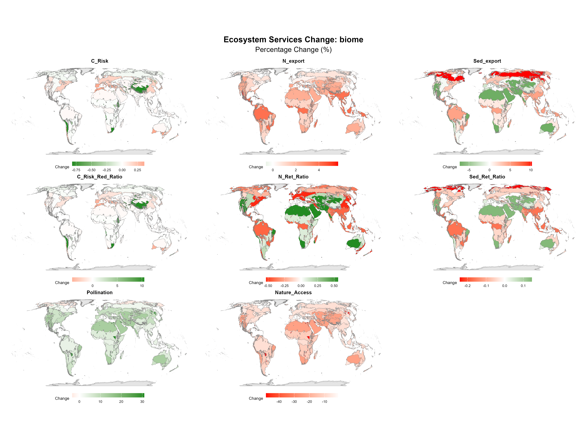
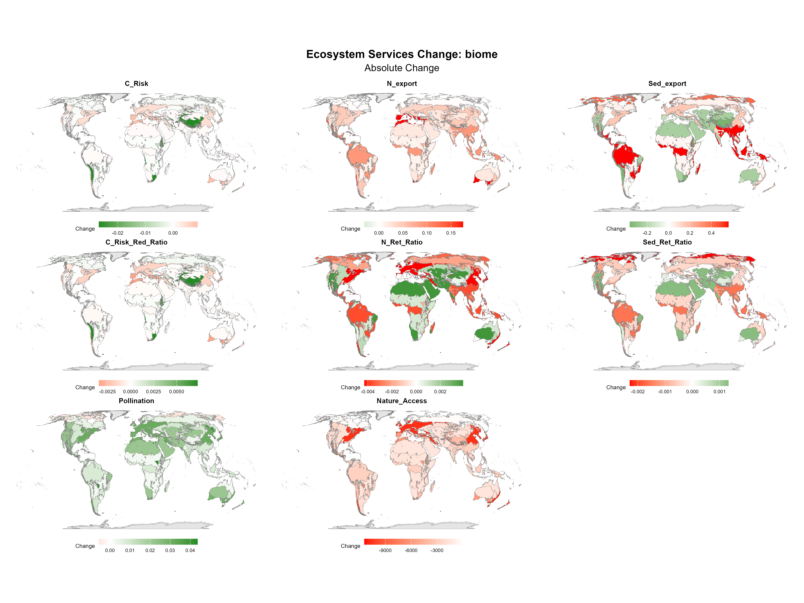
4.2 Global Hotspot Distribution
At the grid scale, we identified 252,215 unique cells experiencing at least one extreme ecosystem service hotspot (19.37% of evaluated cells). These zones exhibit intense geographic clustering. When evaluated across ecological contexts, Mangroves stand out as the most severely impacted biome, experiencing nearly 5× the expected hotspot intensity relative to their global area. (Detailed geographic breakdowns of these epicenters by World Bank Region—where Latin America and East Asia dominate—and by Income Group are provided in the Annex).
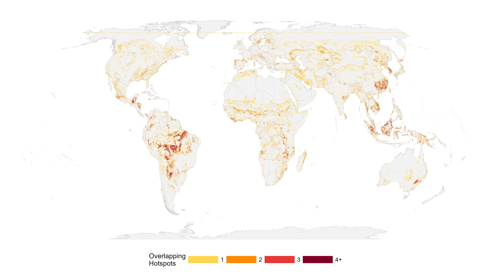
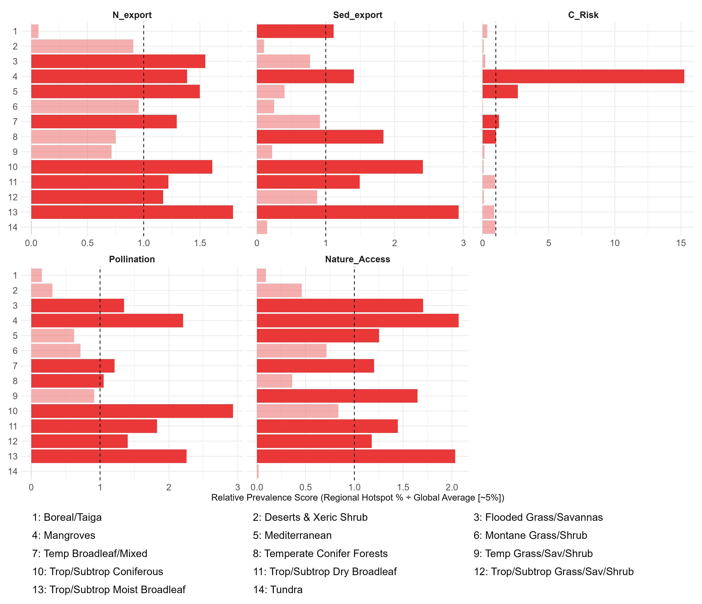
4.2.1 Hotspot Magnitude by Biome
Beyond identifying where hotspots are, we analyze the magnitude of change within them. The Symmetric Percentage Change (SPC) show significant variation across both ecosystem services and biophysical contexts. The variation highlights how different ecological foundations experience relative extremes. (Analysis of magnitude variation across socioeconomic strata is available in the Annex).


4.3 Socioeconomic Profiling: KS Diagnostics

The spatial KS tests reveal that 47 out of 48 service-by-covariate combinations (97.9%) show highly significant distributional differences between hotspot and background populations (\(p < 0.05\) after strict FDR correction). Cliff’s Delta metrics cleanly separate these dynamics into two distinct socioeconomic typologies: * Infrastructure-Driven Typologies: Hotspots tracking declines in Nature Access, Coastal Protection, and Sediment Retention are heavily associated with high baseline population densities, expanding built-up footprints, and high localized GDP profiles,possibly related with urban infrastructural expansion. * Agricultural-Driven Typologies: Hotspots tracking Pollination losses and accelerated Nitrogen Export are strongly coupled with low population densities and elevated agricultural plot intensity, isolating crop intensification as the primary driver of rural landscape decline.


4.4 Population Exposure and the Serviceshed Multiplier Effect
We estimate that approximately 7.6 billion people (7,596.0 million)—representing roughly 97% of the global population in 2020—live within, or depend directly upon, the spatial footprint of these hotspots or their connected servicesheds. While upper-middle-income countries encompass the largest absolute volume of exposed citizens, lower-middle-income countries experience the highest relative hotspot intensity—experiencing an exposure profile roughly 1.6 times more severe than OECD nations. Low-income populations account for approximately 12.4% of the total affected people.
Crucially, when expanding our analysis from Local Residents (5,286.2 million people living directly within hotspots) to Connected Beneficiaries further away, we observe variations depending on the pathway of service delivery. By tracing down-gradient hydrological flow paths, we identify 6,420.1 million downstream beneficiaries reliant on these affected upstream locations. When evaluating the access-based travel footprint (populations relying on nature access and wild pollination within reachable distances), the reliant population expands to 7,401.2 million individuals. This reveals a profound Multiplier Effect: the vulnerable population balloons by nearly 1.4x when accounting for physical access, and is 1.15 times larger globally than populations living directly downstream. This multiplier underscores how highly localized environmental degradation cascades into extensive regional vulnerabilities, extending far beyond the immediate demographic footprint (Brauman et al., 2007; Keeler et al., 2012).
To evaluate how this multiplier behaves under escalating ecological failure, we grouped the populations by their localized Compound Risk—ranging from cells experiencing at least one service decline up to those facing catastrophic, simultaneous failure of four or more services. The purpose of this aggregated analysis is to test whether intense, overlapping environmental crises remain geographically contained.
The resulting Compound Risk dumbbell chart (plotted on a logarithmic scale) unequivocally demonstrates that they do not. Even in the rarest, most severely degraded landscapes (\(\ge 4\) overlapping hotspots), the number of Connected Beneficiaries remains logarithmically larger than the in-situ Local Residents. The persistent multiplier gap across all risk tiers proves that compounding environmental collapse projects systemic vulnerabilities far down-gradient and across broader travel networks, threatening populations that do not even reside within the degraded zones.
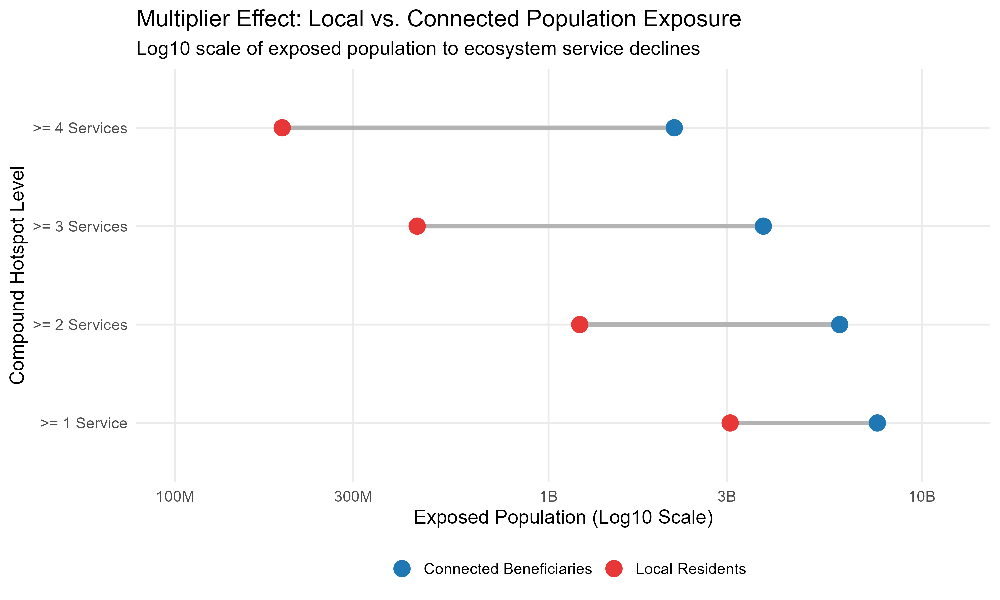
4.5 The Spatial Attribution Gap
Our spatial overlay analysis reveals that major land cover transitions intersect with an average of only 24% of identified ecosystem service hotspots. The remaining 76% of hotspots constitute a profound spatial attribution gap, exhibiting zero intersection with satellite-detected categorical land-use change. Among the explicitly captured transitions, the dominant contributors are forest conversion (19.8%), cropland expansion (19.0%), and grassland loss (7.7%).
The magnitude of this 76% gap confirms that standard macro-scale satellite classifications are largely blind to the primary drivers of environmental decline. This strong analytical signal indicates that global ecosystem service loss is fundamentally driven by sub-pixel, in-situ landscape degradation—including selective logging, understory clearance, heavy fertilizer application, and localized edaphic degradation—which structurally compromises biophysical flow capacities while leaving the macro-level vegetation classification completely unchanged.
| Land Cover Transition | Overlap with Hotspots |
|---|---|
| Forest Conversion | 19.8% |
| Cropland Expansion | 19.0% |
| Grassland Loss | 7.7% |
| Attribution Gap (Unmapped Degradation) | 76.0% |
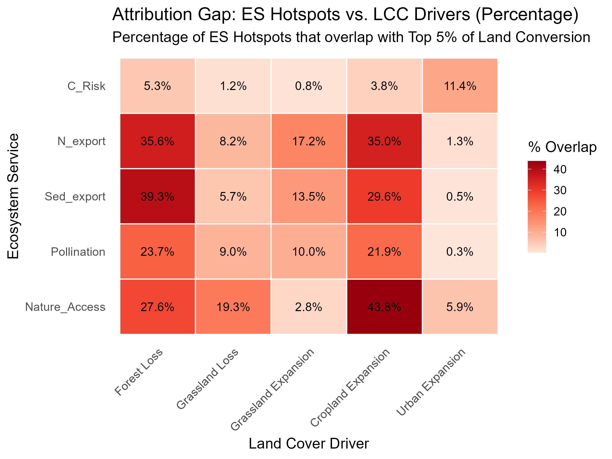
5 Discussion
5.1 Geographic Clustering Enables Prioritization
The intense geographic concentration of hotspots within specific sub-regions of Latin America and East Asia proves that global environmental decline is highly non-uniform, opening clear pathways for optimized resource deployment. Targeted interventions within high-intensity nations—such as South Korea, Malaysia, Guatemala, and Jamaica—can maximize conservation return on investment. However, because the precise spatial configurations of these hotspots vary significantly by service type, executing blanket, generalized conservation frameworks will likely fail; interventions must transition toward multi-tier spatial management plans tailored to localized biophysical outputs.
5.2 Differentiated Vulnerability Tiers
Socioeconomic profiling confirms that global environmental decline cannot be managed as a singular crisis; it operates via highly differentiated exposure pathways. Urban populations face acute, localized vulnerabilities tied directly to structural infrastructural safety (e.g., loss of coastal protection and natural runoff moderation), requiring targeted urban green-infrastructure integration. Concurrently, rural and marginalized agrarian communities face direct threats to food security and long-term economic solvency due to systemic pollination collapse and agricultural water degradation. Conservation architectures must therefore abandon uniform paradigms and align directly with the specific socioeconomic realities of the exposed populations.
5.3 Attribution Complexity: The Degradation Dominance
The 76% attribution gap fundamentally challenges the long-standing assumption in global modeling that categorical land cover conversion serves as an accurate proxy for overall ecosystem service health. Crucially, this gap emerges despite the systemic endogeneity of our workflow, where the InVEST models rely directly on categorical land-use classifications to determine biophysical output coefficients. The fact that nearly three-quarters of extreme functional service declines bypass explicit spatial intersections with macro-scale land transitions provides an ironclad signal that sub-pixel landscape degradation—operating below the detection thresholds of 300-meter optical sensors—is the dominant mechanism driving global environmental vulnerability (Vancutsem et al., 2021). Relying strictly on protected-area boundaries designed to halt absolute deforestation will prove structurally insufficient if the internal habitat matrix continues to undergo severe in-situ functional degradation.
Biophysically, we speculate that this decoupling occurs because continuous spatial and meteorological variations natively embedded within the InVEST architecture override or exacerbate the static categorical map labels. We identify two primary mechanisms driving this phenomenon:
- Upstream Routing Cascades: A grid cell’s land cover classification may remain statically mapped as “Forest” across both temporal snapshots, yet widespread agricultural conversion or landscape clearance upstream fundamentally alters the upslope hydrologic routing matrix. This expansion delivers a large simulated volume of sediment or nutrient loading down-gradient. The accelerated runoff cascade overwhelms the downslope cell’s native filtering capacity, triggering an extreme functional hotspot of decline despite a completely unchanged satellite-detected land label.
- Continuous Meteorological Forcing: Independent of land-use changes, continuous climate-driven fluctuations in historical baseline rainfall vectors and erosivity layers manipulate the absolute biophysical load moving through the landscape. This shifts functional capacities into extreme outlier percentiles without requiring a corresponding categorical land-cover transition.
These dynamics carry profound policy implications. Traditional conservation frameworks that rely strictly on static protected-area boundaries designed to halt absolute deforestation will prove structurally insufficient if the internal habitat matrix continues to undergo severe, unmapped in-situ functional degradation.
5.4 Pipeline Limitations and Analytical Uncertainties
We explicitly acknowledge several bounding limitations within this pipeline: 1. Temporal Discretization: Relying on two discrete temporal snapshots (1992 and 2020) effectively masks complex intermediate non-linearities, land-use oscillations, and short-term recovery dynamics. 2. Model Decoupling: The InVEST modeling engines utilized do not fully decouple climate-driven meteorological variations from direct, anthropogenically driven land-use changes. 3. Attribution Independence: Because the categorical ESA CCI land cover data acts concurrently as a core baseline input for the biophysical models and as the basis for the driver overlay analysis, the attribution gap must be interpreted as a highly structured indicator of sub-pixel degradation rather than a completely independent empirical validation. Extensive, localized field validation remains an irreplaceable requirement, particularly within high-intensity tropical and sub-tropical hotspot zones. 4. Socioeconomic Complexity of Exposure: While this study currently evaluates absolute population exposure and aggregated serviceshed multipliers, future iterations must systematically cross-tabulate connected beneficiaries by deeper multidimensional strata—such as localized poverty indices, granular Human Development Index (HDI) bins, and Gini wealth distributions—to accurately resolve the complex environmental justice implications of serviceshed collapse.
6 Conclusions
This global assessment structurally integrates high-resolution biophysical models, multi-decadal satellite land cover matrices, and gridded socioeconomic layers to map the macro-geography of environmental decline. Our findings demonstrate that global ecosystem service loss is highly concentrated within Latin America and East Asia, offering clear entry points for targeted international conservation allocation. We prove that socio-ecological vulnerability is deeply stratified, exposing urban and rural populations to fundamentally distinct risk profiles, and we show that localized upstream habitat impairment scales significantly: exposing 6.4 billion downstream beneficiaries and revealing a 1.15x multiplier effect when expanding to broader travel-based nature access pathways.
Finally, the prominent 76% spatial attribution gap demonstrates that the preservation of macro-level land classifications is entirely insufficient to guarantee the maintenance of ecosystem functions. Future research frameworks must prioritize the empirical field-validation of global biophysical models, integrate high-resolution structural degradation sensors, explicitly isolate climate-driven flow variations, and pursue the active co-production of local management knowledge with vulnerable land managers and indigenous communities at the frontlines of global landscape change.
Furthermore, while this paper focuses on specific macro-regional aggregations, the scalable spatial extraction pipeline developed for this assessment—which seamlessly “squashes” millions of high-resolution grid observations into flexible multidimensional socio-ecological intersections—provides an open-source, highly adaptable framework for future localized, equity-focused environmental policy planning.
7 References
- Berry, D. A., & Ayers, G. D. (2006). Symmetrized percent change for treatment comparisons. The American Statistician, 60(1), 27-31.
- Brauman, K. A., Daily, G. C., Duarte, T. K. E., & Mooney, H. A. (2007). The nature and value of ecosystem services: an hydrological perspective. Annual Review of Environment and Resources, 32(1), 67-98.
- Chaplin-Kramer, R., Sharp, R. P., Mandle, L., Sim, S., Johnson, J. A., Mueller, I., … & Daily, G. C. (2019). Global modeling of nature’s contributions to people. Science, 366(6462), 255-258.
- Daily, G. C., Polasky, S., Goldstein, J., Kareiva, P. M., Mooney, H. A., Pejchar, L., … & Shallenberger, R. (2009). Mainstream conservation into practical decisions. Frontiers in Ecology and the Environment, 7(1), 21-28.
- Fedele, G., Donatti, C. I., Bornacelly, I., & Hole, D. G. (2021). Nature-dependent people: Mapping human direct reliance on ecosystem services globally. Global Environmental Change, 71, 102368.
- IPBES. (2019). Global assessment report on biodiversity and ecosystem services of the Intergovernmental Science-Policy Platform on Biodiversity and Ecosystem Services. IPBES secretariat, Bonn, Germany.
- Keeler, B. L., Polasky, S., Brauman, K. A., Johnson, J. A., Finlay, J. C., O’Neill, A., … & Dalzell, B. (2012). Linking water quality and human well-being on a global scale. Proceedings of the National Academy of Sciences, 109(45), 18619-18624.
- Millennium Ecosystem Assessment. (2005). Ecosystems and Human Well-being: Synthesis. Island Press, Washington, DC.
- Lin, M., Lucas, H. C., & Shmueli, G. (2013). Too big to fail: Large samples and the p-value problem. Information Systems Research, 24(4), 905-917.
- Murray, N. (2017). Global 10 x 10-km grids suitable for use in IUCN Red List of Ecosystems assessments (vector and raster format) (p. 135013975 Bytes) [Dataset]. figshare. https://doi.org/10.6084/M9.FIGSHARE.4653439
- Pontius, R. G., & Millones, M. (2011). Death to Kappa: birth of quantity disagreement and allocation disagreement for accuracy assessment. International Journal of Remote Sensing, 32(15), 4407-4429.
- Pontius Jr, R. G. (2022). Metrics That Make a Difference: How to Analyze Change and Error. Springer International Publishing. https://doi.org/10.1007/978-3-030-70765-1.
- Sharp, R., Douglass, J., Wolny, S., Arkema, K., Bernhardt, J., Bierbower, W., … & Wyatt, K. (2020). InVEST User’s Guide. The Natural Capital Project, Stanford University, University of Minnesota, World Wildlife Fund, and The Nature Conservancy.
- Sullivan, G. M., & Feinn, R. (2012). Using effect size—or why the p value is not enough. Journal of Graduate Medical Education, 4(3), 279-282.
- Vancutsem, C., Achard, F., Pekel, J. F., Vieilledent, G., Carboni, S., Simonetti, D., … & Eva, H. D. (2021). Long-term (1990–2019) forest degradation and deforestation in the moist tropics of South Asia, Southeast Asia and Latin America. Nature, 591(7848), 115-122.
8 Annex: Supplemental Figures
This annex contains supplemental figures that provide additional detail and context for the analyses presented in the main body of the paper.
8.1 Regional Trajectories by World Bank Region
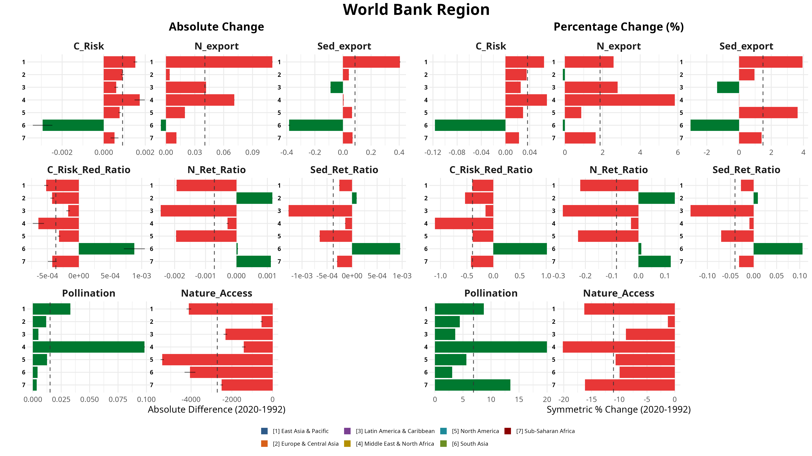
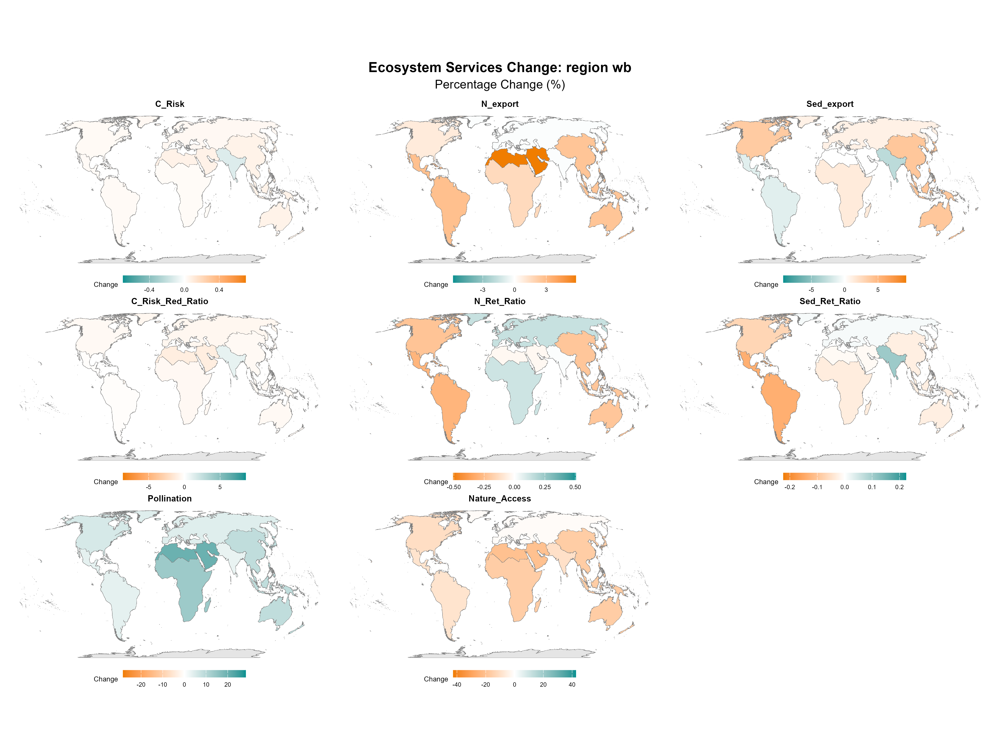
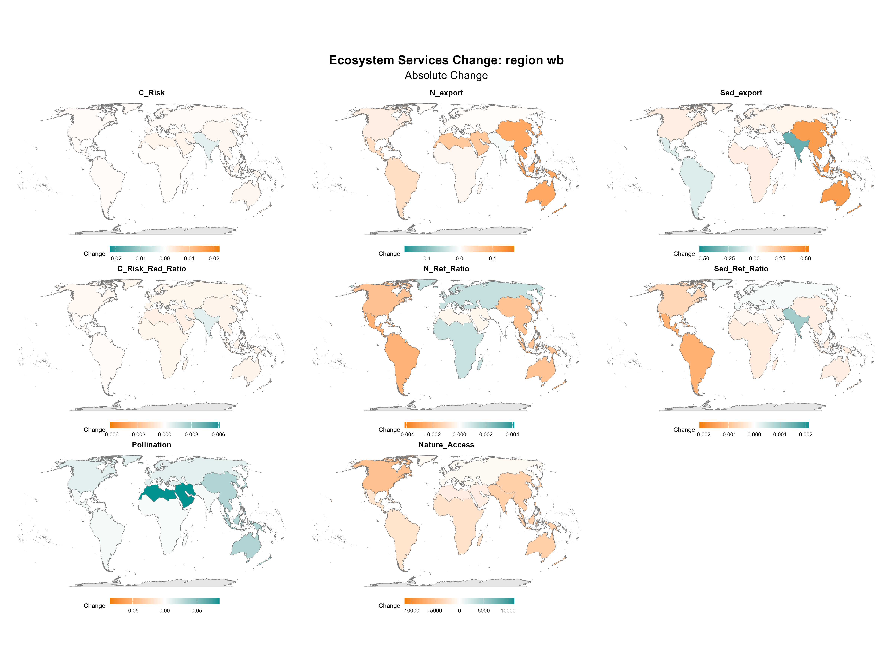
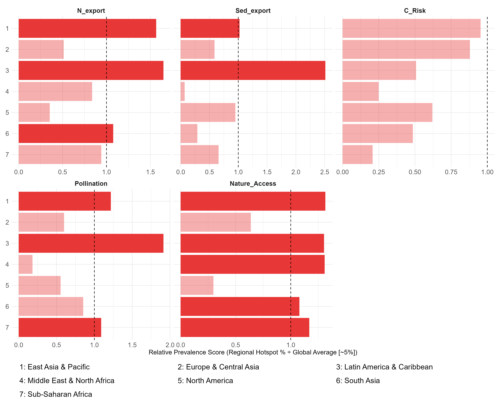


| World Bank Region | Relative Intensity (Enrichment) |
|---|---|
| Latin America & Caribbean | 1.40× |
| East Asia & Pacific | 1.30× |
| South Asia | 0.80× |
| Sub-Saharan Africa | 0.78× |
| Europe & Central Asia | 0.65× |
8.2 Regional Trajectories by Income Group
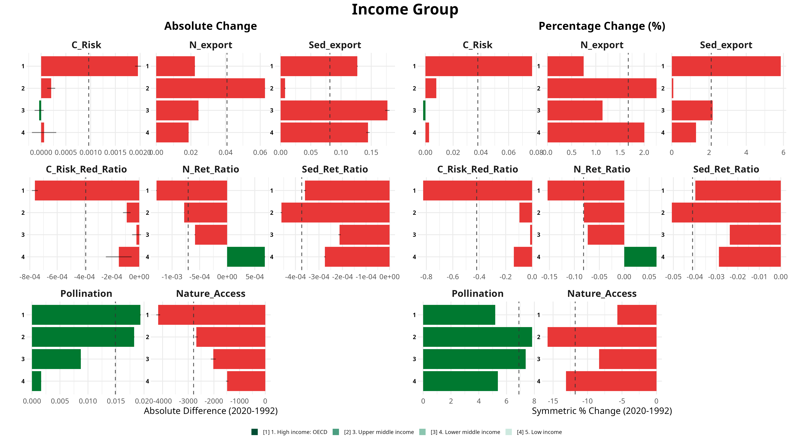
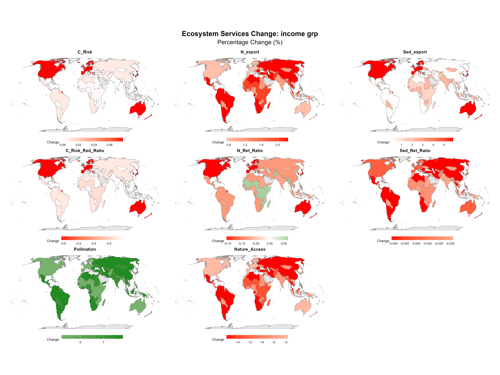
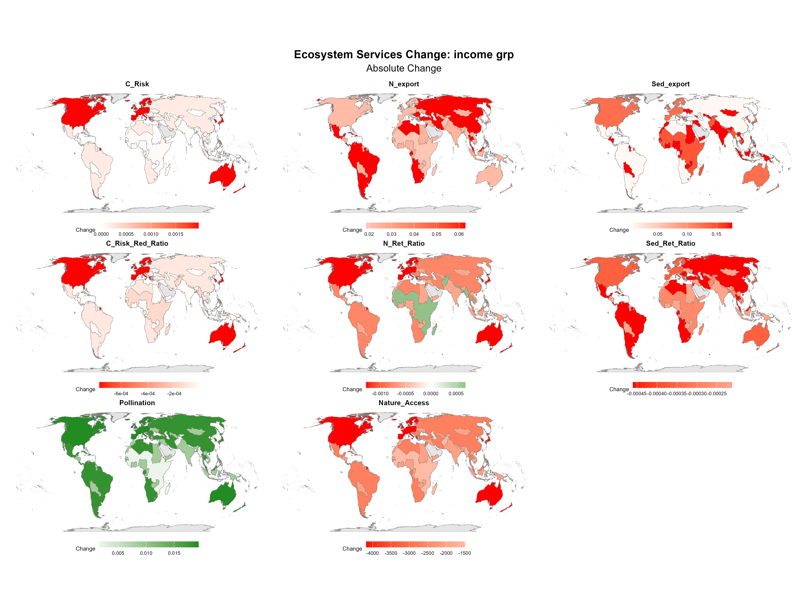
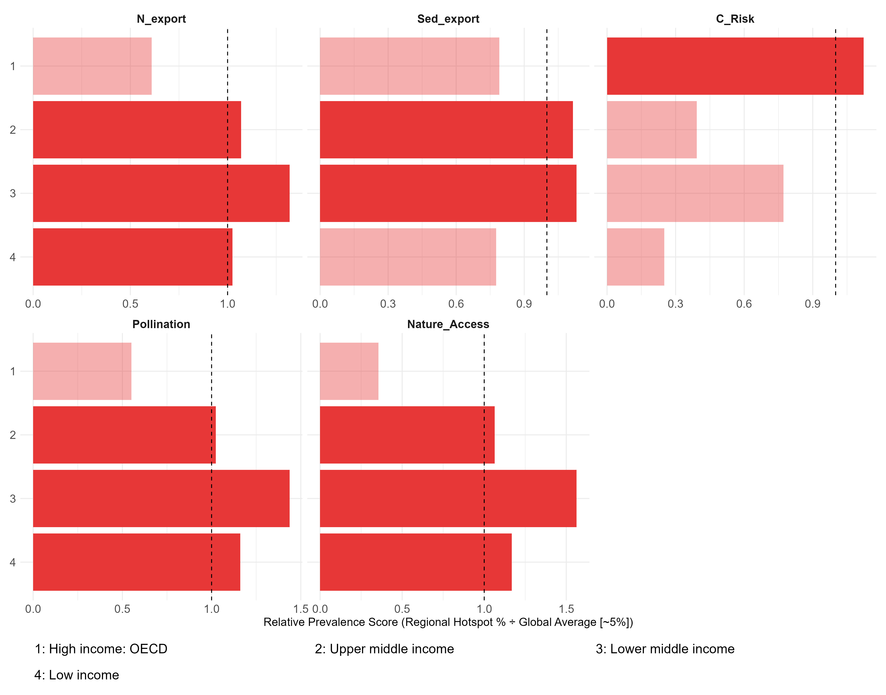


8.3 Geographic Distribution by Country
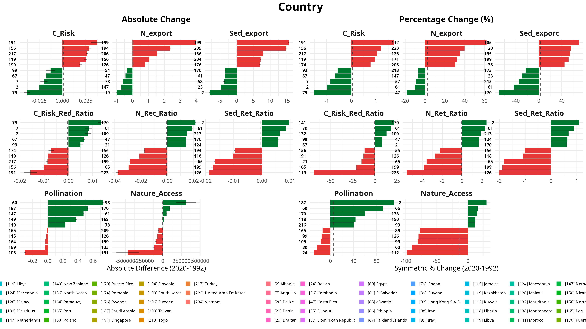
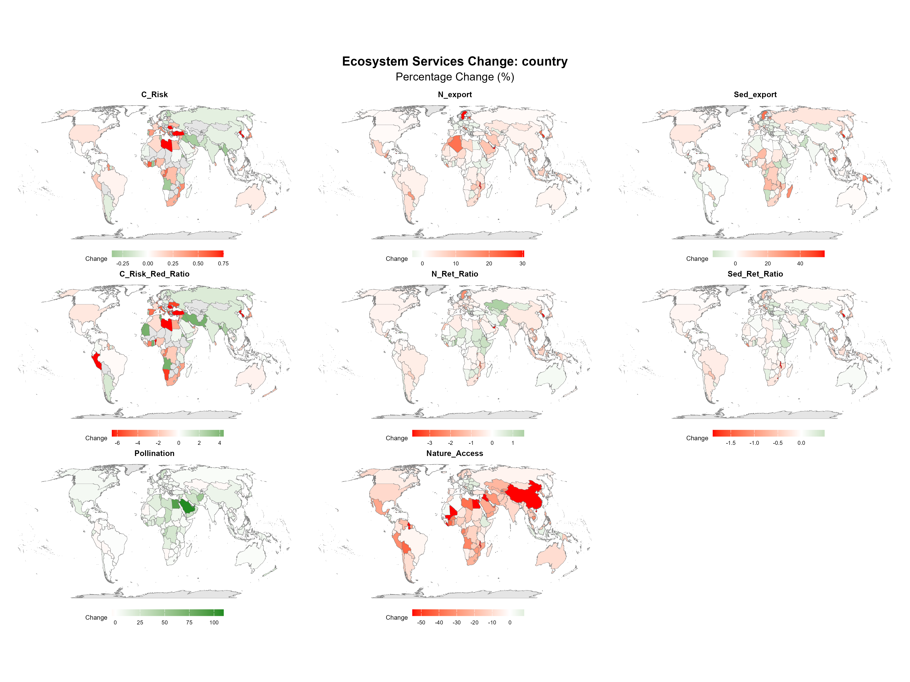
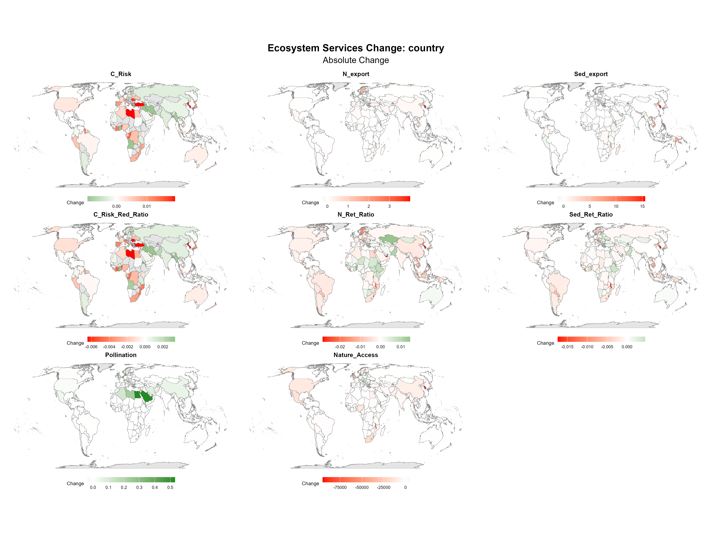
8.4 Serviceshed Multiplier Effect Breakdowns
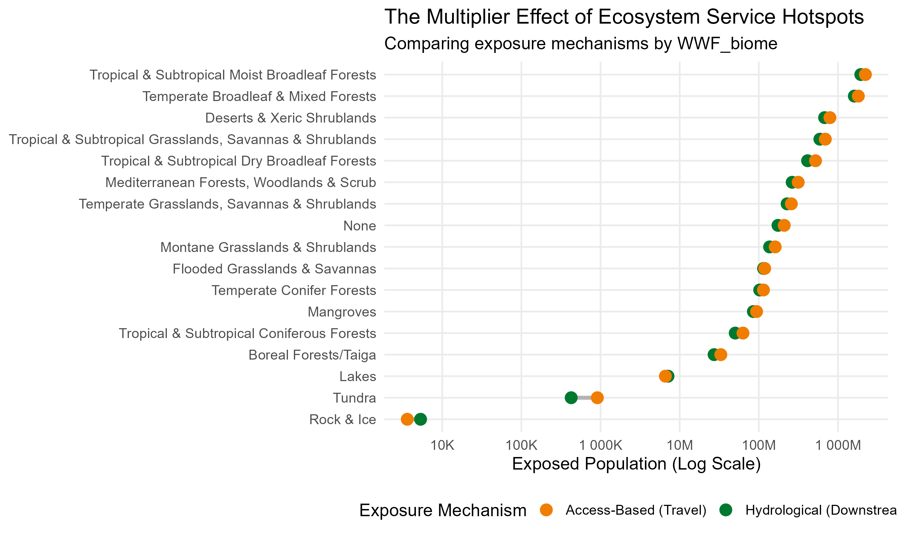
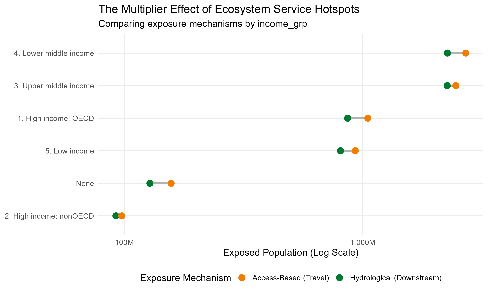